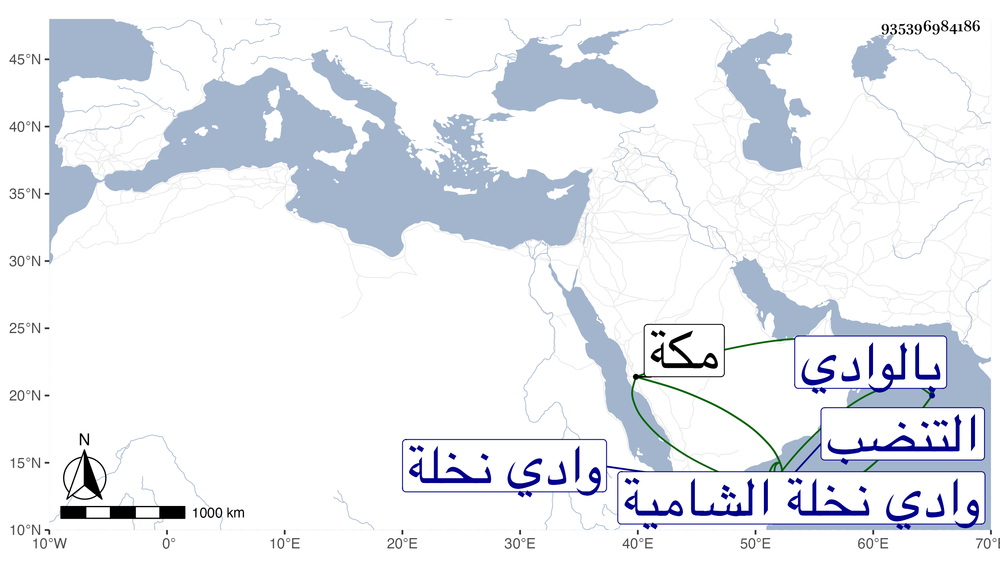

0902Sakhawi.DawLamic.ITO20230111-ara1.EIS1600.935396984186
Biography ID: 935396984186
1106
يعقوب بن إبراهيم ويعرف بأبي الحمد . كان مقيما بقرية التنضب من وادي نخلة الشامية يعقد بها الأنكحة ويكتب الوثائق وله بالوادي عقار وسمعة عند العرب شهيرة كبيرة بل عليه اعتمادهم مع خير ومروءة وعقل وأمه مكية وكان يتردد إلى مكة ويقيم بها . وبها مات بعد الحج سنة ثلاث عشرة أو في المحرم سنة أربع عشرة وقد جاز الستين ظنا غالبا . ذكره الفاسي وأنشد عنه شعرا لغيره وقال أنه سأله عن أكثر ما علمه من تمر النخيل فذكر أن ثلاث نخلات ببشرى من وادي نخلة جد منها نيف وأربعون صاعا مكيا وأظنه قال خمسة وأربعون صاعا قال وهذا عجيب .
